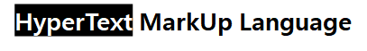
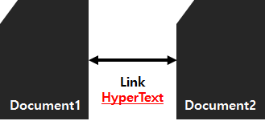
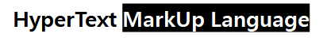
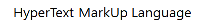
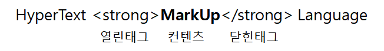

태그와 컨텐츠
[목차]
#1 HyperText
#2 MarkUp Language
* 다음 포스팅은 개인적인 공부 내용을 정리하는 용도로 작성된 글 이기에, 잘못된 정보를 포함하고 있을 수 있습니다.
#1 HyperText
HTML이란 HypertText MarkUp Language의 약자로, 웹 페이지를 제작할 때 사용되는 언어이다. 본격적으로 HTML 관련 문법에 대해 알아보기 전에, HTML의 이름이 지닌 의미를 자세하게 분석해 보도록 하자.

HyperText는 문서와 문서가 연결 되어 있다는 의미인데, 예를들어 특정 홈페이지에서 어떠한 링크 혹은 컨텐츠를 누르면 해당 페이지로 넘어가는 상황을 예시로 들 수 있다. 이처럼 HyperText 즉, 문서와 문서간 연결 = 링크(Link)는 HTML 언어에서 매우 중요한 개념이다.

#2 MarkUp Language

다음으로 MarkUp은 "표시한다" 라는 뜻이다. 즉, MarkUp Language 는 표시하는 언어 라는 의미인데, 무엇을 표시하고 또 어떻게 표시하는 것일까?
예를들어 HyperText MarkUp Language 라는 문장이 있고, MarkUp 이라는 글자를 굵게 강조하는 상황을 예시로 들어보자.

아래처럼 "태그" 라는 것을 이용해 MarkUp 글자를 감싸 주면 된다. 여기서 왼쪽 태그는 시작하는 태그라는 의미로 "열린태그" 오른쪽 태그는 끝나는 태그라는 의미로 "닫힌태그" 라고 부른다. 그리고 태그로 감싸진 MarkUp 글자를 "컨텐츠"라고 부른다. (상품을 구매할 때 태그를 떠올리면 이해하기 쉽다. 태그는 기능에 대한 정보를 함축하고 있는데, strong 태그는 글자를 굵게 표시하는 기능을 가지고 있다.)

HTML식으로 표현해 보면, "MarkUp 컨텐츠를 strong 태그로 굵게 표시했다." 라고 할 수 있다.
HTML은 실상 태그로 시작해서 태그로 끝난다고 해도 과언이 아니다. 다양한 태그와 기능을 배워 나가는 것이 HTML 학습의 시작이자 끝이라고 할 수 있다. 이처럼 HTML은 다른 언어에 비해서 매우 학습하기가 쉽다는 장점이 있다.